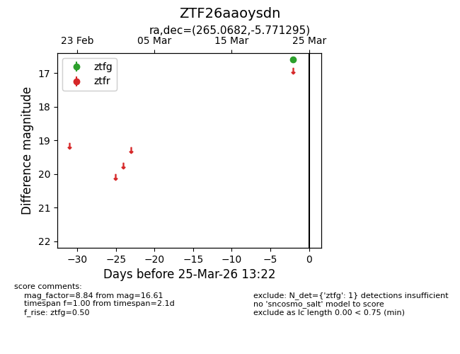
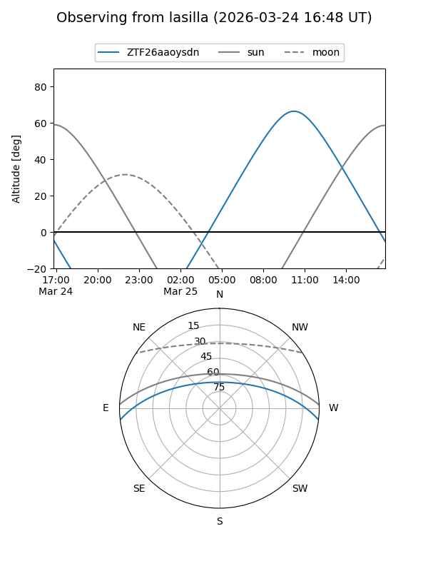
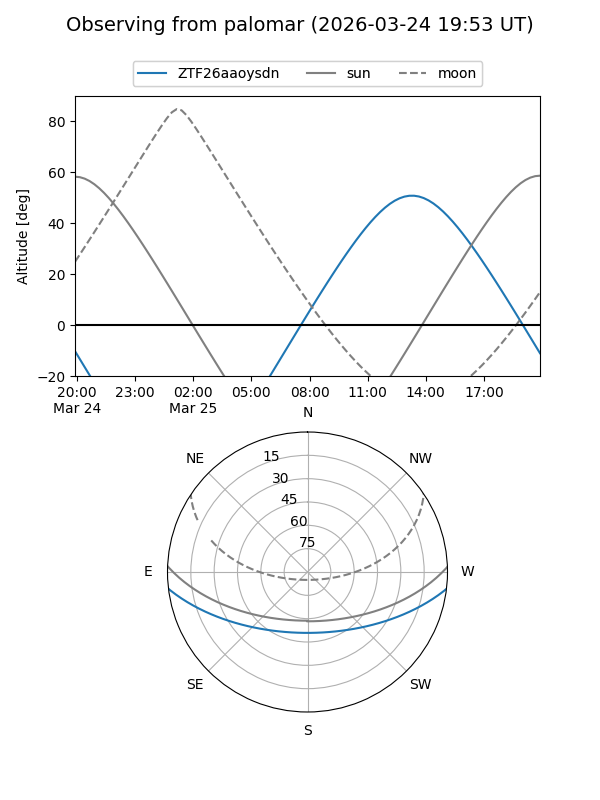

ZTF26aaoysdn
Target ZTF26aaoysdn at 2026-03-25 13:25
Aliases and brokers:
FINK: link
Lasair: link
ALeRCE: link
alt names
ZTF26aaoysdn (ztf,fink_ztf)
Coordinates:
equatorial (ra, dec) = 265.0682,-5.77130
equatorial (HMS+DMS) = 17:40:16.36,-05:46:16.66
galactic (l, b) = (19.3932,+12.98557)
Flags:
Photometry:
last ztfg=16.61
1 ztfg detections
Lightcurve

Visibility


Additional plots